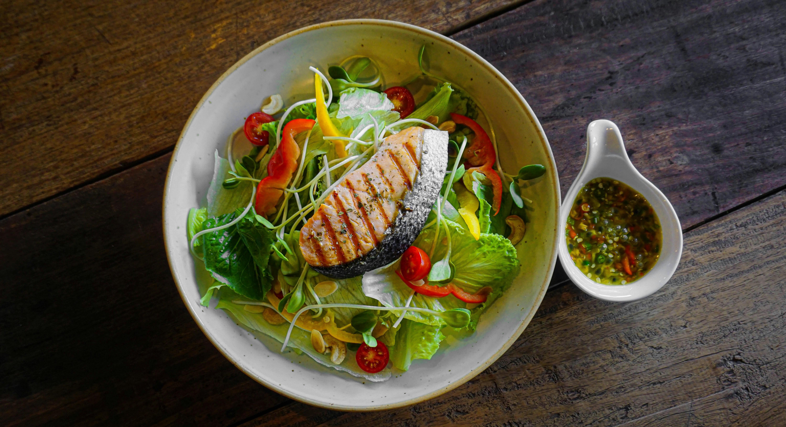

Início

Ingredientes que Não Podem Faltar na sua Dieta Fitness

Peito de Frango Grelhado Rápido e Fácil

Benefícios das Frutas Cítricas nas suas Receitas Fitness

Frango Acebolado com Arroz Integral

Salada de Frutas Saudável para Servir na Sobremesa

Salada Proteica com Peixe Grelhado
